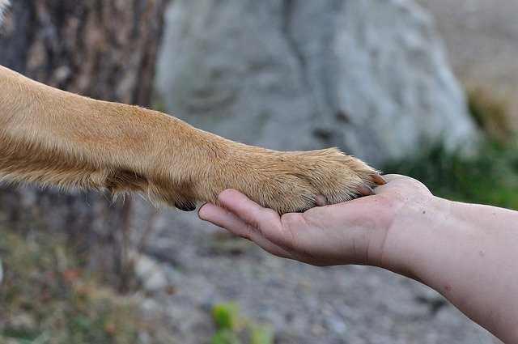

- Some dogs with extremely good noses can sniff out medical conditions! They can alert owners if owners' blood sugar level get low. Also, there are some cases that dogs be more protective of female owners if they are pregnant.
- Is your dog left-pawed or right-pawed? A few studies found out that dogs have preferred paw!
- A dog's nose print is unique! It's just like human's fingerprint.
- Dogs can carry rabbis in their system. However, don't worry! Dying from a dog bite is twice less likely to die from a bee, wasp, or hornet sting! According to dog bite statistics, the cance of dying from a dog attack is one in 118,778.